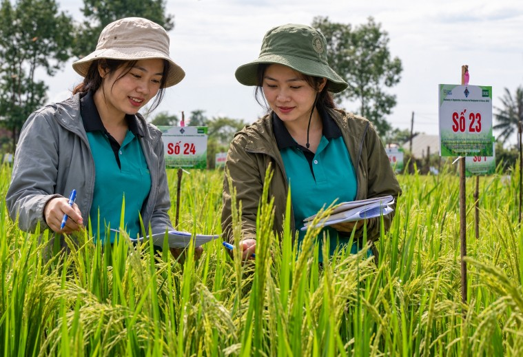
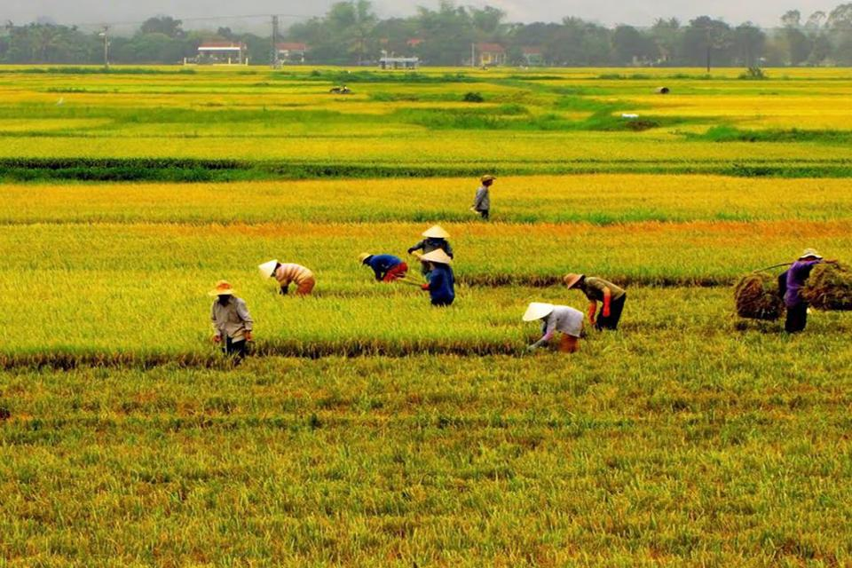
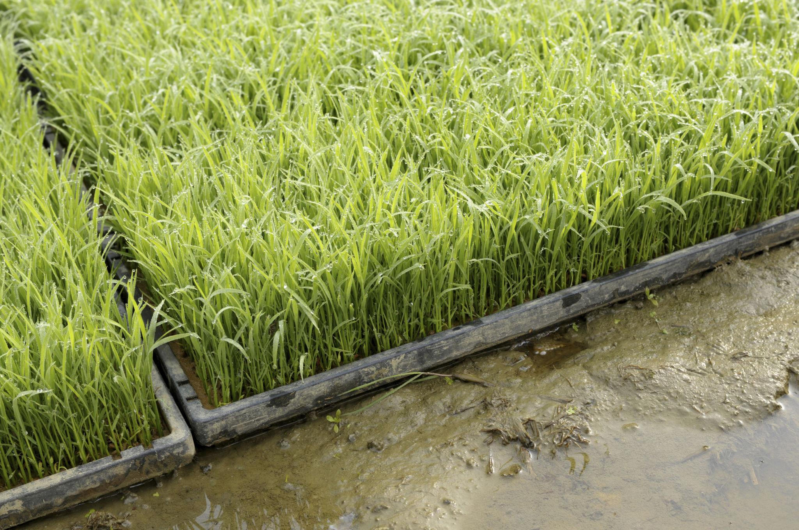
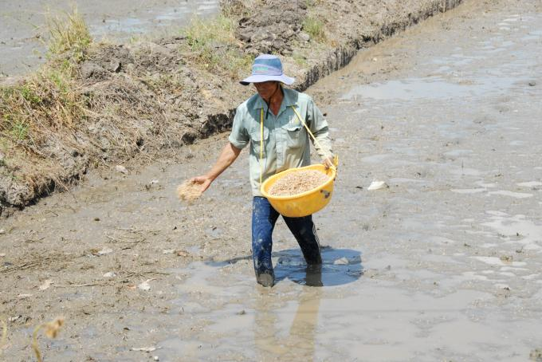
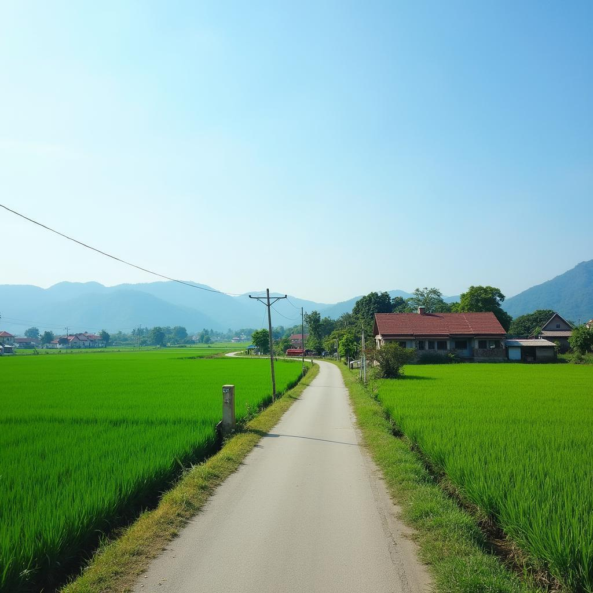

한국의 겨울, 베트남의 봄. 낯설면서도 정겨운 베트남의 농촌 이야기
저의 고향은 경상남도 하동군입니다.
어릴 적부터 부모님을 따라 논밭에 나가 농사일을 거들었습니다. 처음에는 어른들이 시키는 자잘한 일을 돕는 정도였지만, 나이가 들면서 점차 농사일에 익숙해졌습니다. 성인이 될 무렵에는 농기계도 혼자 다룰 수 있을 정도였습니다.
그렇게 익숙했던 농촌을 떠나 사회생활을 시작했고, 어느덧 고향에서 농사짓던 시절도 오래전의 추억이 되었습니다.
그런데 베트남을 방문하면서 잊고 있었던 어린 시절의 기억이 종종 떠오르곤 합니다.
하노이 시내를 조금만 벗어나면 넓게 펼쳐진 논과 작은 마을들이 나타납니다. 논에서 일하는 사람들, 좁은 농로를 오가는 오토바이, 들판 너머로 보이는 농가들까지.
물론 한국의 농촌과 똑같지는 않습니다. 하지만 논에서 일하는 사람들의 모습이나 농촌 특유의 분위기를 보고 있으면 어린 시절 고향에 돌아온 듯한 기분이 들 때가 있습니다.
어쩌면 제가 베트남을 편안하게 느끼는 이유 중 하나도 이런 익숙한 풍경 때문인지 모르겠습니다.
한국은 겨울인데, 베트남에서는 모내기를?
결혼 후 한국의 명절인 설날에 맞춰 베트남을 방문했던 적이 있습니다.
한국에서는 한창 추운 겨울이었습니다. 고향의 논도 농사가 끝나 한동안 조용할 시기였지요.
그런데 베트남에 도착하니 사람들이 논에서 한창 모내기를 하고 있었습니다.
농사일이 익숙한 저에게도 꽤 신선한 풍경이었습니다. 한국에서는 보통 5~6월에 모를 심는데, 베트남에서는 2월에 모내기를 하고 있었으니까요.
가만히 살펴보니 한국에서 보던 모내기와 비슷한 점도 있고 다른 점도 있었습니다. 모판에서 기른 어린 모를 논으로 옮겨 심는 모습은 익숙했지만, 현지의 농사일은 우리나라와 또 다른 분위기였습니다.
특히 당시 제가 방문했던 마을에서는 논에서 일하는 여성들이 유독 많이 눈에 띄었습니다.
물론 남성들도 있었고, 제가 우연히 그런 풍경을 많이 보았을 수도 있습니다. 한국에서도 과거에는 가족 모두가 농사일을 거들었으니까요.
하지만 낯선 나라에서 여성들이 논에 들어가 모내기하는 모습을 보고 있자니, 어린 시절 어머니와 동네 아주머니들이 함께 농사일하던 풍경이 떠올랐습니다.

한국에서 농사짓던 어느 남자의 이야기
문득 그 무렵 베트남에서 만났던 한 한국 남성이 생각납니다.
그분은 한국의 시골에서 농사를 짓던 사람이었고, 국제결혼을 위해 베트남을 방문했다고 했습니다.
당시 현지의 농사짓는 모습을 보면서 이런저런 이야기를 하던 것을 옆에서 들은 기억이 납니다.
모를 심을 때는 이렇게 해야 한다거나, 저런 방법으로 농사를 지으면 안 된다는 등의 이야기였습니다. 한국에서 직접 농사를 지어본 사람이니 나름대로 경험과 지식이 있었을 것입니다.
다만 이야기를 듣다 보니, 한국에서 하던 방식이 당연히 옳고 베트남 사람들이 농사짓는 방식은 조금 뒤떨어진 것으로 생각하는 듯한 인상을 받았습니다.
당시에는 저도 그 이야기를 크게 생각하지 않았습니다. 저 역시 한국에서 농사를 지었던 경험이 있었으니까���.
하지만 베트남을 여러 차례 방문하고 현지의 생활을 조금씩 이해하게 되면서 생각이 달라졌습니다.
한국과 베트남은 기후가 다르고, 농사짓는 시기도 다르며, 지역에 따라 논의 환경도 상당히 다릅니다.
한국에서 익숙한 농사 방법이 베트남에서도 반드시 적합하다고 할 수 있을까요?
현지 농민들도 오랫동안 자신들의 땅과 기후에 맞춰 농사를 지어왔을 것입니다. 그들이 사용하는 농법에는 우리가 미처 알지 못하는 나름의 이유가 있을 수 있습니다.
한국에서는 한 번, 베트남에서는 두세 번
조금 더 알아보니 베트남은 지역에 따라 벼를 1년에 두 번, 많게는 세 번까지 수확할 수 있는 나라였습니다.
우리나라에서는 보통 5~6월에 모내기를 하고 9~10월에 벼를 수확합니다. 물론 남부 지방에서는 벼를 수확한 뒤 겨울에 보리를 재배하는 이모작도 가능합니다.
반면 베트남 북부에서는 일반적으로 벼농사를 두 번 짓습니다. 봄벼는 2월 무렵 모내기를 시작해 6월에 수확하고, 다시 여름벼를 심어 가을에 수확합니다.
제가 설날에 방문했을 때 보았던 풍경이 바로 봄벼 모내기였던 것입니다.
날씨가 따뜻한 남부 메콩강 삼각주에서는 사정이 조금 다릅니다. 지역에 따라 벼를 1년에 세 번 수확하기도 합니다.
물론 여러 번 농사를 지을 수 있다고 무조건 좋은 것만은 아닙니다. 벼를 계속 재배하면 땅의 양분이 부족해질 수 있고, 병해충이나 물 관리에도 더 많은 신경을 써야 합니다. 충분한 비료와 유기물 공급, 적절한 휴경과 작물 관리가 필요한 이유입니다.

모판과 직파, 서로 다른 농사 방법
제가 방문했던 북부 지역에서도 한국처럼 모판을 이용하고 모를 옮겨 심는 모습을 볼 수 있었습니다. 베트남이라고 모두 직파를 하는 것은 아닙니다.
직파는 얼핏 보기에는 볍씨를 뿌리기만 하면 되니 간단한 방법처럼 생각될 수 있습니다. 하지만 볍씨가 고르게 발아하도록 물과 토양을 관리해야 하고, 벼와 함께 자라는 잡초도 잘 관리해야 합니다.
최근 베트남에서는 볍씨를 일정한 간격과 깊이로 심고 비료까지 함께 공급하는 정밀 직파 기술도 연구·보급하고 있습니다. 종자 사용량과 비료를 줄이면서 안정적인 수확을 얻기 위한 노력입니다.
반대로 한국의 모판을 이용한 이앙은 봄철의 낮은 기온을 피하면서 건강한 모를 기르고, 논에 옮겨 심어 생육을 관리하는 데 유리합니다.
결국 두 방식 모두 장점과 단점이 있습니다. 어느 나라의 기술이 더 우수하냐는 단순한 문제가 아니라 기후와 토양, 노동력과 생산비 등을 함께 고려해야 하는 문제인 셈입니다.


낯설지만 익숙한 베트남의 농촌
생각해 보면 농사라는 것이 참 비슷합니다.
한국에서도 농민들은 해마다 날씨를 걱정하고, 비가 너무 많이 와도 걱정하고, 가뭄이 들어도 걱정합니다. 좋은 종자를 고르고 비료를 주며, 조금이라도 더 나은 수확을 얻기 위해 노력합니다.
베트남 사람들도 마찬가지일 것입니다.
우리와 다른 기후에서 살아가고, 때로는 우리가 잘 모르는 방식으로 농사를 짓지만, 그들 역시 오랫동안 자신들의 땅에서 농사짓는 방법을 익혀온 사람들입니다.
베트남에 처음 갔을 때는 한국과 다른 풍경이 신기했습니다. 겨울에 모내기하는 것도 그렇고, 논에서 일하던 사람들의 모습도 그랬습니다.
하지만 여러 번 방문하면서 신기했던 풍경은 점차 익숙한 풍경이 되었습니다.
하노이에서 조금만 벗어나면 만날 수 있는 논과 농촌 마을들. 그곳을 지날 때면 지금도 어린 시절 하동의 시골에서 농사일을 거들던 기억이 떠오릅니다.
멀리 떨어진 다른 나라에서 고향의 향수를 느낄 수 있다는 것.
어쩌면 그것이 제가 베트남을 좋아하는 또 하나의 이유인지도 모르겠습니다.
